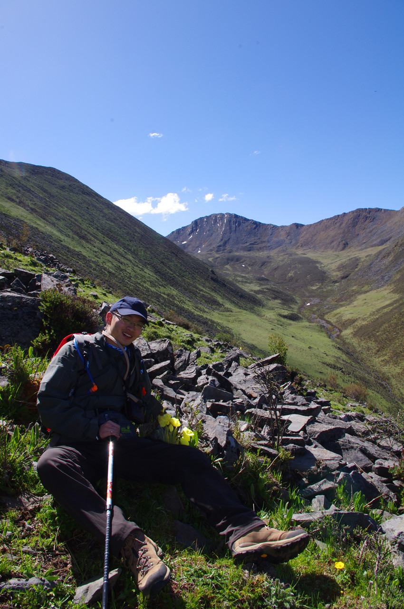

发信人: missy (诚实可爱小狼君★天府之国★), 信区: outdoor
标 题: 随便看看
发信站: 饮水思源 (2013年06月19日22:30:04 星期三)
端午去的丹巴莫斯卡村，被拖拉机把屁股都磨烂了，早上起来随便爬了个山坡就感觉要死
了

 screen.width - 200){this.width = screen.width - 200}">
screen.width - 200){this.width = screen.width - 200}">
--
了解得多了才知道，那些在寝室里看A片打飞机的才最是纯洁善良有爱心的交大男。虽然他们精通三十六散手、七十六绝技等理论，但他们心中藏着的盼着的多半都还是一个黑发长裙的女孩，有着空空的真诚与希志的笑容；他们幻想着着在结婚的当晚和这个羞涩纯洁的姑娘双双将理论变成实践；口中叫嚣着一万遍，心中的对象只有她一个；学习的技巧如何多，也只是想让她能够快乐；
但对于那个喜欢的女生，要么不够大胆只能暗恋，要么追求不当被拒连连。明明家境平凡年少不多金，明明不擅交际若愚不大智，爱玩游戏成绩一般般，不会打扮长相平平，可是还是忍不住喜欢她，
喜欢你，对不起，我是交大WSN。
※ 来源:·饮水思源 bbs.sjtu.edu.cn·[FROM: 221.237.62.195]
|